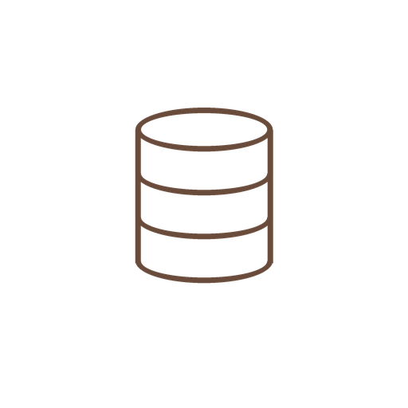

TRANSAKSI
Kasir
Pilih menu, atur jumlah, lalu proses pembayaran.

Rp0Hanya untuk internalMARKETING
Promo & diskon
Atur diskon persentase atau nominal per menu, dengan tanggal aktif.
INVENTORI
Stok
Pantau stok produk jual, catat penambahan dan penyesuaian stok.
ANALITIK
Laporan penjualan
Ringkasan penjualan, HPP dan laba kotor. Data internal, bukan untuk struk.
Menu terlaris
Metode pembayaran
ARUS KAS
Keuangan
Catat pemasukan dan pengeluaran di luar transaksi kasir.
TIM OUTLET
Absensi
Catat jam masuk dan pulang setiap staf pada perangkat kasir.
TRANSAKSI TERSIMPAN
Riwayat penjualan
Lihat detail transaksi atau cetak ulang struk pelanggan.
KONFIGURASI OUTLET
Pengaturan
Profil outlet, hak akses pegawai, dan perangkat keras.
Hak Akses Pegawai
Atur izin aplikasi untuk Owner, Manajer, dan Kasir. Pengaturan ini disimpan di profil data POS.
IzinOwnerManajerKasir
Pembayaran & QRIS
Metode di bawah dapat dipilih saat transaksi. QRIS dinamis memerlukan akun penyedia payment gateway dan integrasi backend yang valid.
Jangan masukkan API secret di aplikasi/browser. Kunci rahasia harus disimpan di backend/server. Status integrasi: belum terhubung sampai API gateway dikonfigurasi dan diuji.
PIN Cepat Kasir
PIN lokal hanya untuk kenyamanan perangkat ini; bukan pengganti autentikasi server yang aman.
Akun & Sinkronisasi
Untuk sinkronisasi lintas perangkat, pastikan Supabase dan kebijakan akses sudah dikonfigurasi.
Status backendBelum dikonfigurasi
Cadangan Data
Ekspor cadangan sebelum pindah perangkat. Simpan file dengan aman.